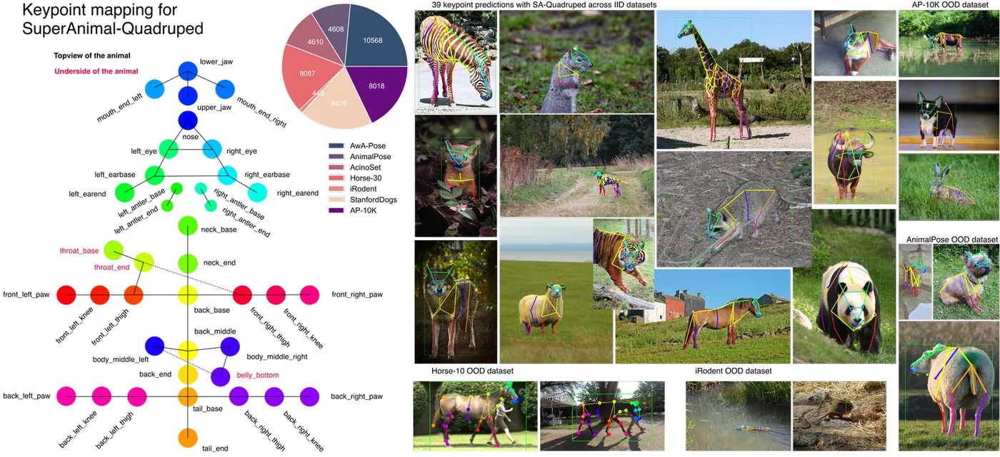
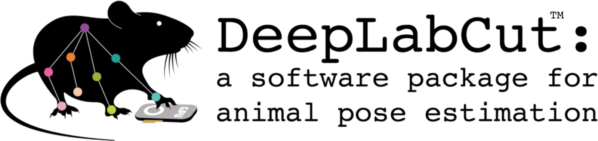
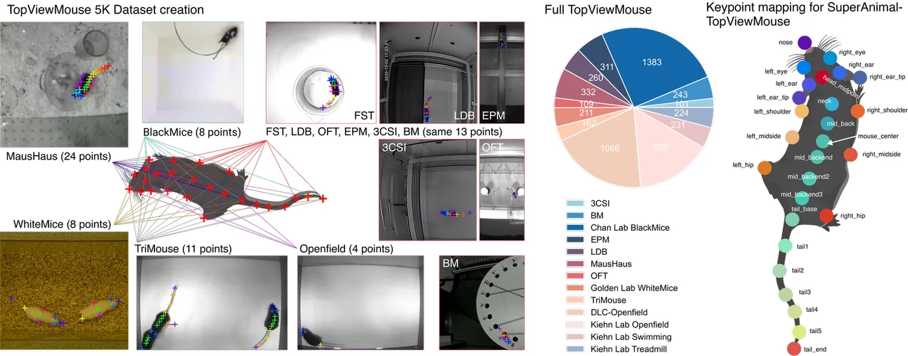
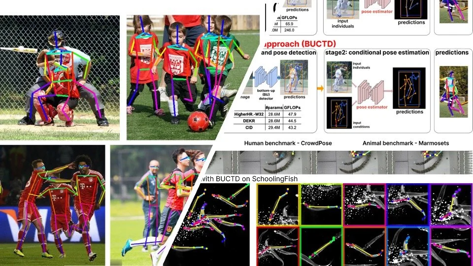

SuperAnimal-Quadruped
Trained on over 40,000 images of four-legged animals, from mice, rats, horses, dogs and cats to elephants and gazelles. 39 keypoints.


An efficient method for 2D and 3D markerless pose estimation, based on transfer learning with deep neural networks. It matches human labeling accuracy with minimal training data, typically 50–200 frames, and works across species and behaviors. It is open source, fast and robust, and supports 3D pose and multiple animals.
Behavior, measured across species with DeepLabCut
Follow the installation instructions, then use the graphical interface and the step-by-step user guide.
Source code, releases and issues. Please give us a star.
Guides, API reference and tutorials.
Get DeepLabCut running in a few clicks.
Pretrained models, ready to use.
Talks and tutorials on YouTube.
Hands-on course notebooks and slides.
Ask questions on the image.sc forum.
Release notes and stories from users.
Support DeepLabCut: visit the swag shop ↗
Use models already trained on a wide range of animals and scenarios to analyze your videos directly, or fine-tune them with about 10× less data than the original DeepLabCut weights. Read the SuperAnimal paper (Ye et al., Nature Communications 2024).

Trained on over 40,000 images of four-legged animals, from mice, rats, horses, dogs and cats to elephants and gazelles. 39 keypoints.

Trained on over 5,000 mice across diverse lab settings. Mostly C57 mice, with some CD1 (white) mice. 26 keypoints.

Bottom-up conditioned top-down pose estimation for crowded scenes. A bottom-up model proposes each individual's pose, and a conditional top-down model refines it, so overlapping animals or people are kept apart.
Monocular 3D pose estimation via flow matching: it lifts 2D keypoints from a single image into 3D. Pretrained for humans and for quadrupeds, with the animal pipeline built on SuperAnimal.
Help us make the Model Zoo better with more data, more models and more results. Label images in the DeepLabCut labeling web app, email modelzoo@deeplabcut.org, or propose a model through this form.
Please cite the paper listed with each model. For our own unpublished models (non-commercial use only), please cite Ye et al., 2024.
Thank you to our Model Zoo contributors. Jim McBurney-Lin (UC Riverside), Claire Witham (MRC Harwell), Rollyn Labuguen & Jumpei Matsumoto (University of Toyama) contributed models. Sam Golden, Jacob Dahan, Katherine Shaw, Nick Hollon, Loukia Katsouri, Lauren (Nikki) Beloate, Leandro Aluisio Scholz, Diego Giraldo, Alice E Kane, Nina Harano, Vasyl Mykytiuk, Khaterah Kohneshin, Michelle Joyce, Alejandra Del Castillo, Tara O'Driscoll and Alice Tang contributed labeled data.
For general inquiries or media: admin@deeplabcut.org.
Please do not reuse logos or images from this page without permission, except for research use with a citation of the source.